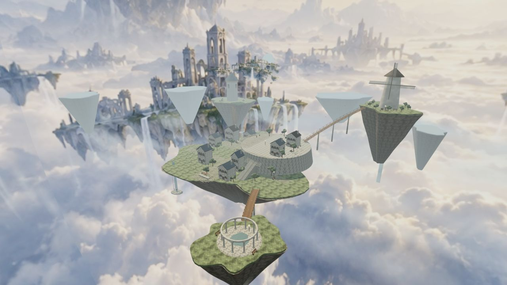
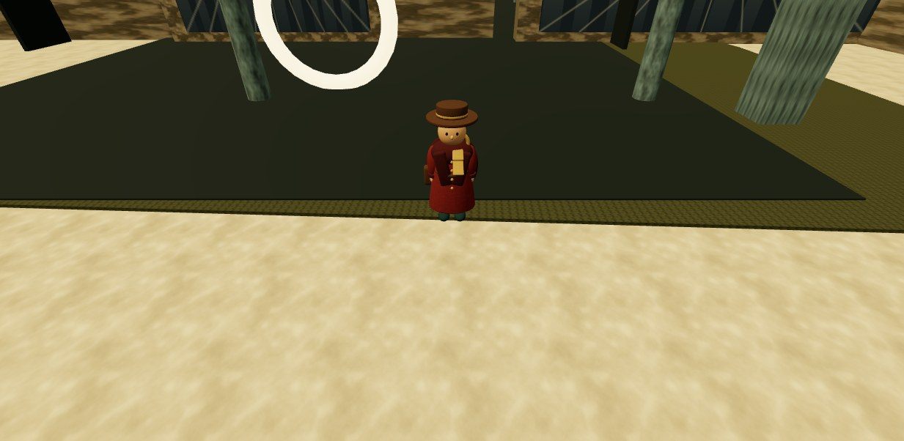
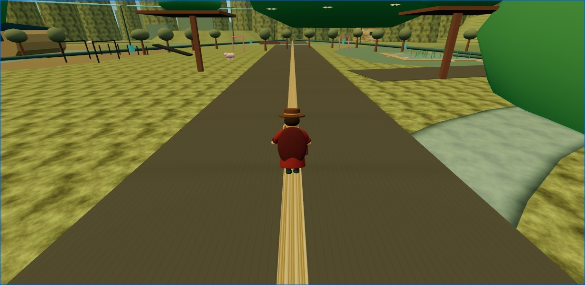
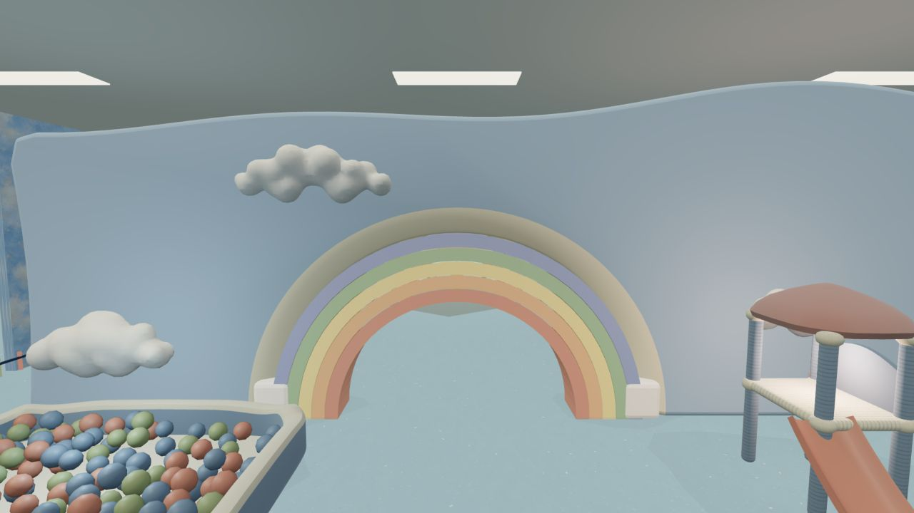
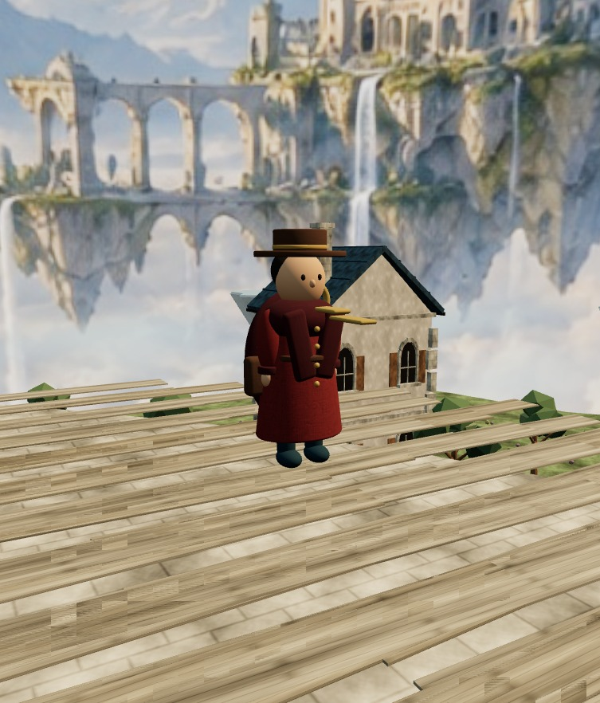
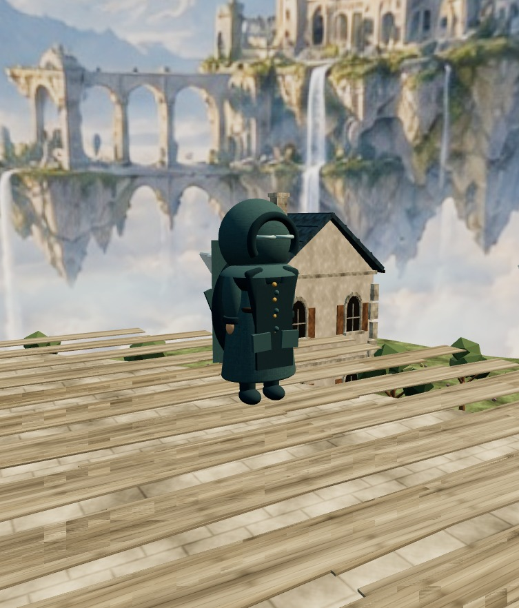
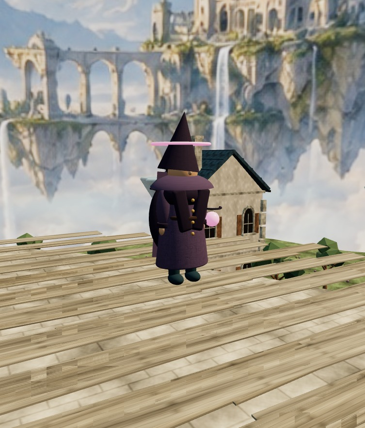

好きな方向へ飛び、気になった場所へ向かう
決められた順路はありません。地表近くを進むことも、上空から全体を見渡すこともできます。4つの世界は独立しており、世界選択画面から移動します。
発見した場所は同じブラウザに保存されます。アカウント登録は不要です。
場所を見つけ、近くまで移動し、記録します。発見によって照明、水面、扉などが変化し、次の場所を探す手掛かりになります。
決められた順路はありません。地表近くを進むことも、上空から全体を見渡すこともできます。4つの世界は独立しており、世界選択画面から移動します。
発見した場所は同じブラウザに保存されます。アカウント登録は不要です。
同じ地形の色違いではなく、建物の用途、移動する高さ、音、発見後の変化を分けています。画像はすべて実際のゲーム画面です。

目標：雲海に浮かぶ島々と、小規模な街を上空から巡る世界。
市場、庭園、鐘楼、風車、雲下設備が別々の島にあります。遠くに見えた場所へ、そのまま飛んで移動できることを重視しました。

目標：用途の異なる施設が、増改築でつながった巨大建築。
ロビー、宴会場、浴場、搬入口、点検路があります。似た廊下の中から、上層へ移動できる入口を探します。

目標：水、電力、食料を地域内で循環させるソーラーパンクの郊外。
温室、配水庭、修理工房、集光塔、空中菜園があります。設備同士が水路や送電線でつながっていることを、移動しながら確認します。

目標：子どもの遊び場と、記憶の中の施設が混ざったドリームコア。
虹、ボールプール、小さな街、寝室、雲の回廊が続きます。開口部を通過するたびに、部屋の用途と色が変わります。
色だけではなく、帽子、フード、頭上の輪によって輪郭を変えています。ゲーム内の選択欄からいつでも切り替えられます。

コート、帽子、鞄を備えた基本デザインです。衣服と持ち物で人物らしさを出しています。

顔の情報を減らし、広い空間を一人で移動する存在として見えるようにしています。

頭上と背面の輪によって、遠景でも主人公の位置を判別しやすくしています。
主人公に台詞や固有名はありません。移動方向へ身体を向け、上昇、下降、旋回、発見に合わせて動作します。手を振る、お辞儀、回転も操作できます。
マウスを動かしただけではカメラは動きません。ドラッグまたはスワイプしている間だけ視点が変わります。
AIへ一度依頼して完成したのではありません。実画面で問題を見つけるたびに、設計、画像、3D素材、プログラムのいずれかへ戻りました。
最初に要望を文章で整理し、必要な素材と操作を決めます。画像と3D素材を作り、ブラウザ上で組み合わせます。その後、実際に動かし、自動テストと画面確認を行います。問題があれば、原因に応じた工程へ戻ります。
目指す世界観、参照作品、操作の希望、実画面を見た感想。
場所の役割、移動経路、必要な3D素材、性能上限、合格条件をMarkdownへ整理しました。
曖昧な指示は実装前に質問し、決めた内容をタスクリストと検査項目へ分けます。
Codexの画像生成。遠景、壁面の模様、遊戯室の目標画面を作りました。
遠景画像は霧とぼかしを加えて最も遠い層に配置します。壁面画像は繰り返せるテクスチャへ加工します。
生成画像をそのまま歩ける空間にはできません。手前の建物、地形、遊具は別途3Dで作ります。
BlenderとPython。建物、遊具、雲、主人公をGLB形式の3Dファイルへ書き出しました。
同じスクリプトから素材を再生成し、寸法、材質数、三角形数、重複面を確認できるようにしました。
ブラウザで読み込めるGLBと、再生成用Pythonスクリプトを保存しています。
Three.js。Webブラウザに3Dを表示するためのJavaScriptライブラリです。
移動、カメラ、衝突判定、光、霧、発見記録、キャラクター選択を一つの画面で動かします。
同じ形をまとめて描画し、遠い区画を非表示にして、描画回数を抑えました。
Web Audio API。追加アプリを使わず、ブラウザ内でBGMと効果音を再生します。
ステージ別の環境音、飛行音、足音、発見音、区画ごとの響きを組み合わせました。
ブラウザは自動再生を制限するため、「世界に入る」を押した後に音を開始します。
PC幅とスマートフォン幅で、操作、文字、衝突、ちらつき、カメラを確認します。
30・60・120Hzの移動、最大速度の衝突、3D素材の重複面、保存、各画面へのリンクを検査します。
結果をPLAYTEST-REVIEW.mdとGitコミットへ残し、再発時に原因を追えるようにします。
GitHubとGitHub Pages。合格した変更をmainブランチへ記録し、公開URLへ反映します。
GitHub Pagesです。Cloudflare Pagesは候補として検討しましたが、現在の公開経路には使っていません。
ローカルでテストした後にpushし、公開ページでも主要画面を確認します。
重要：画面確認で問題が見つかった場合、次工程へ進むのではなく、原因のある工程へ戻ります。背景が平面に見えれば画像と3D配置へ、通れなければ衝突判定へ、重ければ描画方法へ戻ります。
完成画面だけでは分かりにくい部分を、実際の実装方法と対応させて説明します。
生成画像へ霧とぼかしを加え、大きな円筒の内側へ貼っています。プレイヤーが近づく地形や建物は3Dで作り、平面画像との境目を見えにくくしました。
音楽だけで空間を説明せず、風、室内の反響、設備音を重ねています。閉鎖施設では残響を長くし、郊外では水と機械の音を地区ごとに変えています。
3種類を色替えだけにせず、帽子、フード、頭上と背面の輪を追加しました。飛行中は進行方向へ向き、旋回時に身体が傾きます。
窓、柱、植物、ボールなどは一つずつ別に描画せず、同じ形をまとめています。見た目の数を減らさず、ブラウザの処理を抑えるためです。
模式図で症状の仕組みを示し、その下に原因、修正、再発防止をまとめます。模式図は当時の画面キャプチャではありません。
| 症状 | 原因 | 修正 | 再発防止 |
|---|---|---|---|
| 床や水面がちらつく | 同じ位置に複数の面が重なっていた。 | 面同士の高さを分け、不要な面を削除した。 | 3D素材の重複面を検査する。 |
| 虹が裏から薄く見える | 表面だけで厚みと裏面がなかった。 | 側面と背面を追加し、通過できる開口寸法へ直した。 | 裏面、厚み、開口幅を素材テストへ追加した。 |
| フードの主人公が飛ぶと頭部が欠ける | フードがアニメーション中の頭部へ追従していなかった。 | 頭部ボーンへフードを接続した。 | 全アニメーションで表示状態を確認する。 |
| 見えない壁で止まる | 表示している形と衝突範囲が一致していなかった。 | 通路の衝突範囲を分割し、床の外縁を移動範囲から外した。 | 最大速度でも通過できるか検査する。 |
| 高く飛ぶと屋根面だけが見える | 主人公よりカメラのほうが高く移動できた。 | 閉鎖施設のカメラを屋根より下に制限した。 | 最高高度でカメラ位置を検査する。 |
制作は直線的には進みませんでした。特に影響が大きかった判断ミスをまとめます。
問題：画像には芝生、滑り台、雲、人物が自然に収まっていましたが、必要な3D素材、寸法、動線、負荷を決めていませんでした。
結果：実装時に単純な図形や平面画像へ置き換わり、目標画像との差が大きくなりました。
現在：画像を作る前に、素材一覧、配置図、実装可能な表現、性能上限を決めます。
問題：面積と通路を増やしましたが、場所の役割と目印が不足していました。
結果：何もない移動区間や、目的の分からない上層通路が生まれました。
現在：各区間に目的地、見通し、次の場所への手掛かりを設定します。
問題：同じ地形生成、似た建物、同じ移動方式を流用しました。
結果：世界観の違いが色と明るさに偏り、どちらも広い構造物の集まりに見えました。
現在：閉鎖施設は内部構造、郊外は生活と循環設備を中心に作り直しています。
問題：タスクの完了数を、見た目の完成度として加点しました。
結果：遊戯室を70点と報告した後、参照画像と並べると57点相当だと分かりました。
現在：実画面、操作経路、性能、参照との差を別々に採点します。
問題：ちらつき、薄い裏面、フードの欠けを、目視確認だけで完了としていました。
結果：別の素材追加や配置変更で同じ問題が再発しました。
現在：機械で判定できる条件は自動テストへ残します。
AIが自動的に完成品を作ったわけではありません。方針、実装、検査、最終判断を分けています。
目指す世界観、参照作品、操作の希望を提示し、実画面を見て違和感と優先順位を判断しました。
設計、Three.js実装、Blenderスクリプト、素材統合、テスト、ブラウザ確認、Git履歴の更新を行いました。
利用できた期間に、一部のBlender素材を独立して制作しました。指示と結果は共有フォルダのMarkdownとGitで受け渡しました。
4つの世界は同じURLから開けます。PCではURL、スマートフォンではQRコードからアクセスできます。
https://tytydy-cyber.github.io/aeolia-world/世界選択を開く